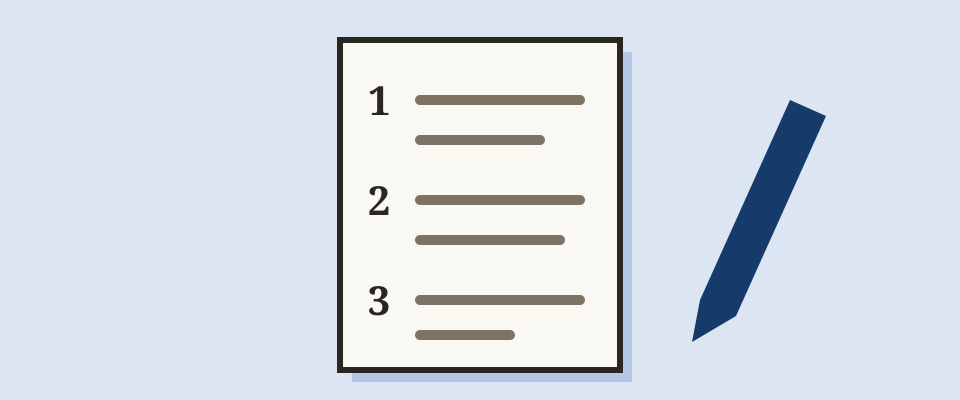

KA · Wiederholung · 35 Minuten
Fit für die Klassenarbeit
Was weißt du schon – und wo hakt es noch?

Darum geht es
Fünf Bereiche · 24 Fragen · etwa 35 Minuten · danach die Probeklausur unter Zeitdruck. Du kannst nach jedem Bereich aufhören und später weitermachen.
So arbeitest du mit diesem Blatt
- Links stehen alle Arbeitsaufträge. Du siehst immer, wo du bist und was noch kommt.
- Jeder Auftrag ist ein Blatt. Du scrollst von oben nach unten.
- Manche Aufträge öffnen nach deiner Antwort, manche auf Ansage deiner Lehrkraft.
- Oben rechts sicherst du deinen Stand als Datei. So geht nichts verloren, auch wenn du das Gerät wechselst.
So läuft dieses Blatt
Was in der Klassenarbeit dran ist
- 1Demokratie und RegierungssystemeAB1 · Repubblica Nova
- 2Grundrechte und GüterabwägungStunde zu den Grundrechten
- 3Parteien: Aufgaben und FunktionenModul 1, Stationen 1 und 2
- 4Bundestagswahl und WahlentscheidungModul 1, Stationen 3 bis 5
- 5EuropawahlStation 6
Die Klassenarbeit dauert 90 Minuten und hat drei Teile: wiedergeben (Anforderungsbereich I) · erklären und einordnen (II) · beurteilen und Stellung nehmen (III). Die meisten Punkte gibt es in II und III.
Hinweis zur Wahlentscheidung in der Klassenarbeit: Du darfst dich für jede zur Wahl zugelassene Partei entscheiden. Die AfD ist vom Bundesamt für Verfassungsschutz als rechtsextremistischer Verdachtsfall eingestuft (Stand: November 2026). Bewertet wird nur, wie gut du deine Entscheidung begründest – nicht, welche Partei du wählst.
- Ich-kann-Liste (1 Seite)Kreuze an, was du sicher kannst – die Liste zeigt dir, wo du noch üben solltest.
- Zusammenfassung (2 Seiten)Mit Schaubildern: Das musst du wissen · Das musst du können. Sie öffnet, wenn du alle fünf Bereiche bearbeitet hast.
- Probeklausur (2 Seiten)90 Minuten, 40 Punkte, ohne Hilfsmittel – wie in der Klassenarbeit.
Mehr Übung zu Parteien und Wahlen: Klausurtraining zu Modul 1 · Zusammenfassung Modul 1. Deine Antworten bleiben nur auf diesem Gerät.
Demokratie, Grundrechte, Parteien und Wahlen · 90 Minuten
Kreuze ehrlich an, wie sicher du bist. Wo du »teilweise« oder »noch nicht« ankreuzt, übst du an der Stelle rechts. Die Liste zeigt, was die Klassenarbeit verlangt – nicht, welche Fälle darin vorkommen.
| Ich kann … | AFB | sicher | teilweise | noch nicht | Hier üben |
|---|---|---|---|---|---|
| Wissen wiedergeben | |||||
| … beschreiben, was alle Demokratien gemeinsam haben und wie sich direkte und indirekte Demokratie unterscheiden. | I | Wiederholung 1 · AB1 | |||
| … das parlamentarische, das präsidentielle und das semipräsidentielle Regierungssystem beschreiben und je ein Beispiel nennen. | I | Wiederholung 1 · Zusammenfassung S. 1 | |||
| … die vier Aufgaben der Politik und die elf Funktionen von Parteien nennen. | I | Wiederholung 3 · Station 1 | |||
| … die Bundestagswahl darstellen: Erst- und Zweitstimme, Zweitstimmendeckung, 5-%-Hürde, Grundmandatsklausel. | I | Wiederholung 4 · Station 4 | |||
| … die Europawahl in Deutschland darstellen und Unterschiede zur Bundestagswahl nennen. | I | Wiederholung 5 · Station 6 | |||
| Einordnen | |||||
| … an einem Beispiel erläutern, welche Funktion eine Partei erfüllt, und sie der passenden Aufgabe der Politik zuordnen. | II | Wiederholung 3 · Station 2 | |||
| … einen Grundrechtseingriff Schritt für Schritt prüfen: Schutzbereich, Eingriff, gesetzliche Grundlage, Zweck, geeignet, erforderlich. | II | Wiederholung 2 · Prüftreppe S. 2 | |||
| … in einer Güterabwägung die Schwere des Eingriffs gegen das geschützte Gut abwägen und zu einem Ergebnis kommen. | II | Wiederholung 2 · Probeklausur 2b, 3a | |||
| Urteilen | |||||
| … eine begründete Wahlentscheidung treffen: Kriterien offenlegen, Positionen belegen, abwägen, Folgen bedenken, Fazit ziehen. | III | Wiederholung 4 · Station 3 · Probeklausur 3b | |||
| … Sachurteil und Werturteil unterscheiden und ein Urteil mit Gegenargument aufbauen. | III | Zusammenfassung S. 2 | |||
| Arbeiten in der Klassenarbeit | |||||
| … an den Operatoren erkennen, was eine Aufgabe verlangt (wiedergeben, einordnen oder urteilen). | – | Zusammenfassung S. 2 | |||
| … meine Zeit einteilen: 10 Minuten lesen, jede Aufgabe nach Zeitvorschlag, 5 Minuten durchlesen. | – | Probeklausur in 90 Minuten | |||
| Name | KlasseJ1 | FachGeschichte mit Gemeinschaftskunde | Datum | Zeit · Hilfsmittel90 Min. · keine | Punkte / 40 |
Probeklausur: Demokratie, Grundrechte, Parteien und Wahlen
Übungsfassung zur Vorbereitung, nicht die Klassenarbeit. Bewertet wird die Qualität Ihrer Begründung, nicht, welche politische Position Sie vertreten.
M1 · Verfassungsentwurf der Republik Valdora (Auszug)
Nach einem langen Bürgerkrieg legt ein Verfassungskonvent der Republik Valdora diesen Entwurf vor:
Art. 2 Alle Staatsgewalt geht vom Volke aus. Sie wird in Wahlen und Abstimmungen ausgeübt.
Art. 5 Das Parlament (400 Sitze) wird alle vier Jahre nach Verhältniswahl gewählt.
Art. 11 Die Präsidentin oder der Präsident wird vom Volk für sechs Jahre direkt gewählt. Sie oder er ernennt die Regierungschefin oder den Regierungschef.
Art. 12 Das Parlament kann der Regierung mit der Mehrheit seiner Mitglieder das Vertrauen entziehen. Die Regierung tritt dann zurück.
Art. 13 Die Präsidentin oder der Präsident kann das Parlament einmal im Jahr auflösen.
Ausgedachter Fall für den Unterricht.
M2 · Fall: Demo auf der Hauptstraße
In einer Kreisstadt melden Schülerinnen und Schüler für einen Samstagvormittag eine Demonstration an. Sie fordern ein günstigeres Bus- und Bahnticket für Schülerinnen, Schüler und Auszubildende. Etwa 600 Menschen wollen über die Hauptstraße zum Rathaus ziehen.
Die Stadt erteilt eine Auflage: Der Zug darf nicht über die Hauptstraße, sondern nur über eine Parallelstraße führen; die Kundgebung auf dem Marktplatz bleibt erlaubt. Begründung: Die Hauptstraße ist die einzige schnelle Zufahrt zum Kreiskrankenhaus, Rettungswagen kämen nicht durch.
Die Veranstalter halten dagegen: In der Parallelstraße sehe sie kaum jemand, die Demo verliere ihren Sinn. Die Polizei könne eine Gasse für Rettungswagen freihalten.
Rechtslage (vereinfacht): Art. 8 GG schützt Versammlungen; unter freiem Himmel kann dieses Recht durch Gesetz beschränkt werden. Nach dem Versammlungsgesetz darf die Behörde Auflagen erteilen, wenn die öffentliche Sicherheit unmittelbar gefährdet ist.
Ausgedachter Fall; Rechtslage vereinfacht.
M3 · Positionen der Parteien zu drei Streitfragen
| Partei | Mindestlohn per Gesetz auf 15 €? | Wehrpflicht wieder einführen? | EU: mehr oder weniger gemeinsam entscheiden? |
|---|---|---|---|
| CDU/CSU | dagegen | dafür | mehr gemeinsam |
| SPD | dafür | dagegen | mehr gemeinsam |
| GRÜNE | dafür | dagegen | mehr gemeinsam |
| FDP | dagegen | dagegen | mehr gemeinsam |
| AfD | keine Aussage | dafür | weniger gemeinsam |
| Die Linke | dafür | dagegen | mehr gemeinsam |
| BSW | dafür | keine Aussage | weniger gemeinsam |
Wahlprogramme zur Bundestagswahl 2025, vereinfacht in drei Kategorien; die wörtlichen Stellen mit Seitenzahl stehen in Station 3 des GK-Labors.
Aufgaben
| Aufgabe 1 · Wiedergeben (AFB I, 10 P.) | ||
| a | Nennen Sie die vier Aufgaben der Politik und beschreiben Sie zwei Funktionen von Parteien an je einem Beispiel. | 6 P. |
| b | Stellen Sie dar, wie die Abgeordneten aus Deutschland für das Europäische Parlament gewählt werden. | 4 P. |
| Aufgabe 2 · Einordnen (AFB II, 16 P.) | ||
| a | Erläutern Sie, welchem Typ von Regierungssystem Valdora (M1) entspricht. Gehen Sie dabei auf zwei Unterschiede zum Regierungssystem der Bundesrepublik Deutschland ein. | 8 P. |
| b | Erläutern Sie mithilfe der Verhältnismäßigkeitsprüfung, in welches Grundrecht die Auflage in M2 eingreift, welchen Zweck sie verfolgt und ob sie geeignet und erforderlich ist. | 8 P. |
| Aufgabe 3 · Urteilen (AFB III, 14 P.) | ||
| a | Beurteilen Sie in einer Güterabwägung, ob die Auflage in M2 angemessen ist. | 6 P. |
| b | Treffen Sie eine begründete Wahlentscheidung für Ihre Zweitstimme bei einer Bundestagswahl: Nehmen Sie Stellung und beziehen Sie M3 sowie mindestens zwei Kriterien ein, die Ihnen wichtig sind. | 8 P. |
Hinweis zu Aufgabe 3b: Alle zur Wahl zugelassenen Parteien sind wählbar. Die AfD ist vom Bundesamt für Verfassungsschutz als rechtsextremistischer Verdachtsfall eingestuft (Stand: November 2026). Bewertet wird allein die Qualität Ihrer Argumentation – nicht, welche Partei Sie wählen.
Summe: 40 Punkte
Operatoren in dieser Klausur
nennen, beschreiben, darstellen (I): Sachverhalte strukturiert und mit Fachbegriffen wiedergeben.
erläutern (II): Sachverhalte in einen Zusammenhang einordnen, begründen und mit Beispielen verdeutlichen.
beurteilen (III): Sachurteil ohne persönlichen Wertebezug. Stellung nehmen (III): Werturteil mit offengelegten eigenen Wertmaßstäben.
Zeitvorschlag
Material lesen: 8 Min. · Aufgabe 1: 15 Min. · Aufgabe 2: 30 Min. · Aufgabe 3: 32 Min. · Durchlesen: 5 Min.
Danach
Korrigieren Sie sich selbst mit dem Erwartungshorizont – erst, wenn alles geschrieben ist. Markieren Sie, was fehlt, und wiederholen Sie genau das.
Seite 1: Das musst du wissen · Seite 2: Das musst du können · Ich-kann-Liste
1 · Demokratie und Regierungssysteme (AB1 · Repubblica Nova)
Alle Demokratien: Volkssouveränität, freie Wahlen auf Zeit, Gewaltenteilung, Grundrechte, Minderheitenschutz, Pluralismus. Direkt: Das Volk entscheidet Sachfragen selbst (Schweiz: starke direkte Elemente). Indirekt: Gewählte entscheiden – in drei Formen:
2 · Parteien: vier Aufgaben, elf Funktionen (Stationen 1 und 2)
Art. 21 GG: Parteien wirken bei der Willensbildung mit; Gründung frei, innere Ordnung demokratisch. Verbieten kann nur das Bundesverfassungsgericht; der Verfassungsschutz beobachtet und stuft ein.
Politikformulierung · entscheiden · neun Funktionen
- Artikulation: Interessen aussprechen
- Aggregation: Interessen bündeln und gewichten
- Transmission: in Entscheidungen einbringen
- Partizipation: Engagement ermöglichen
- Information: sachlich aufklären
- Mobilisierung: Menschen gewinnen
- Sozialisation: in Politik einführen
- Legitimation: Rückhalt für das System schaffen
- Herrschaft: verbindlich entscheiden
Politikimplementation · umsetzen
keine Funktion von Parteien: Umsetzen tun vor allem Regierung und Verwaltung.Politikkontrolle · prüfen
Kontrolle: Regierung und Verwaltung prüfen – vor allem die Opposition.Personalrekrutierung · Personal finden
Rekrutierung: Personal für Ämter und Mandate auswählen.In der Klassenarbeit: Funktion nennen → am Beispiel erklären → der Aufgabe zuordnen.
3 · Bundestagswahl und Europawahl (Stationen 3 bis 6)
| Bundestag | Europäisches Parlament | |
|---|---|---|
| Stimmen | Erststimme (Person im Wahlkreis), Zweitstimme (Landesliste) – sie verteilt die Sitze | eine Stimme für eine Bundes- oder Landesliste |
| Sitze | 630; ein Wahlkreissieg zählt nur mit Zweitstimmendeckung | 96 der 720; je Land 6 bis 96 Sitze (degressive Proportionalität) |
| Hürde | 5 % oder drei Direktmandate (Grundmandatsklausel); SSW befreit | in Deutschland keine (BVerfG 2011, 2014); EU-Hürde ab 2 % beschlossen, nicht in Kraft |
| Wahlalter · Wahlperiode | ab 18 · alle vier Jahre | ab 16 · alle fünf Jahre |
| Danach | wählt die Kanzlerin oder den Kanzler (Mehrheit 316) – meist mit Koalition | wählt die Kommissionspräsidentin auf Vorschlag des Europäischen Rates; Gesetze und Haushalt mit dem Rat, kein Initiativrecht; Fraktionen nach Richtung (Mehrheit 361) |
So ist die Klassenarbeit aufgebaut: drei Aufgaben, drei Anforderungsbereiche
I · Wiedergeben
nennen, beschreiben, darstellen: geordnet und mit Fachbegriffen wiedergeben – ohne eigene Bewertung.II · Einordnen
erklären, erläutern, analysieren: in einen Zusammenhang stellen, begründen, mit Beispiel oder Material belegen.III · Urteilen
beurteilen = Sachurteil: Was bewirkt es, stimmt es? – bewerten, Stellung nehmen = Werturteil: Was ist mir wichtiger, und warum? Immer mit Gegenargument.90 Minuten: erst alles lesen, dann der Reihe nach; am Ende 5 Minuten durchlesen. Bewertet wird die Qualität deiner Begründung, nicht deine Meinung.
Grundrechte: einen Eingriff prüfen mit der Prüftreppe
Grundrechte sind Abwehrrechte gegen den Staat; Menschenrechte gelten für alle (»Jeder …«), Bürgerrechte für Deutsche (»Alle Deutschen …«). Gegen Eingriffe kann man vor Gericht gehen (Rechtsweggarantie, Art. 19 Abs. 4). Ob ein Eingriff erlaubt ist, prüfst du Stufe für Stufe:
- 1Schutzbereich: welches Grundrecht?
- 2Eingriff: was tut der Staat?
- 3gesetzliche Grundlage
- 4legitimer Zweck: welches Gut?
- 5geeignet: fördert es den Zweck?
- 6erforderlich: kein milderes, gleich wirksames Mittel?
- 7angemessen = Güterabwägung
Güterabwägung: Je schwerer der Eingriff – wie viele sind betroffen, wie lange, wie stark? –, desto gewichtiger muss das geschützte Gut sein, etwa Leben, Gesundheit oder die Rechte anderer. Stoßen zwei Grundrechte zusammen, sollen beide so weit wie möglich gelten.
Sachurteil: »Für die Angemessenheit spricht …, dagegen … Weil … schwerer wiegt als …, ist der Eingriff (un)verhältnismäßig.« Scheitert eine Stufe, ist der Eingriff unverhältnismäßig.
Eine begründete Wahlentscheidung treffen
- 1 Kriterienzwei oder drei Themen oder Werte, die dir wichtig sind – und warum
- 2 BelegeWas fordern die Parteien dazu? Aus Programm oder Material
- 3 AbwägenWo passt deine Partei nicht? Was wiegt schwerer?
- 4 Folgen5-%-Hürde, Koalitionen, Regierung oder Opposition
- 5 FazitEntscheidung, die aus der Abwägung folgt
Hinweis: Alle zur Wahl zugelassenen Parteien sind wählbar. Die AfD ist vom Bundesamt für Verfassungsschutz als rechtsextremistischer Verdachtsfall eingestuft (Stand: November 2026). Bewertet wird nur die Qualität deiner Argumentation – nicht, welche Partei du wählst.
Typische Fehler
- Bei »beschreiben« schon bewerten – oder bei »Stellung nehmen« nur beschreiben.
- Eine Funktion nennen, aber kein Beispiel geben oder die Aufgabe verwechseln.
- »erforderlich« und »angemessen« vermischen; nur eine Seite abwägen.
- Erst- und Zweitstimme, Bundestags- und Europawahl verwechseln.
- Ein Urteil ohne Gegenargument – oder ein Fazit, das nicht aus der Abwägung folgt.
- Zu lange an einer Aufgabe bleiben: Zeitvorschlag im Blick behalten.
Dein Plan: Ich-kann-Liste ankreuzen → Lücken in der Wiederholung üben → Probeklausur in 90 Minuten → erst dann mit dem Erwartungshorizont vergleichen.